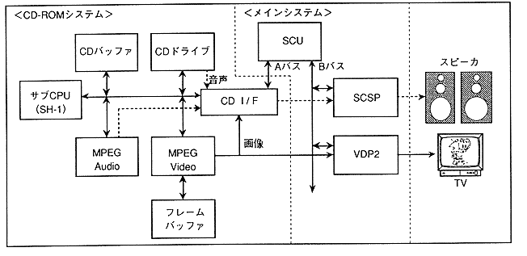

The CD-ROM system can be operated simply by giving a command from the main system via the CD I / F. The sub CPU interprets commands from the main system and controls the CD-ROM drive, CDD buffer, etc., and performs data reading, video playback, and audio playback. For video playback and audio playback, the MPEG standard, the international standard for video compression, is used, and dedicated LSIs “MPEG / Video LSI” and “MPEG / Audio LSI” are used. Figure 3.29 shows the system configuration.
∙ Sub CPU, CD buffer, frame buffer, and C / D I / F are connected to MPEG / Video. Receives compressed image data from the CD buffer and writes the playback image data to the frame buffer (drawing). The rendered frame buffer data is subjected to effects according to the register settings and displayed on the display device via VDP2 which controls screen display. Or it can be transferred to VDP1 and VDP2 VRAM via CD I / F and SCU.
∙ MPEG / Audio receives compressed audio data from CD buffer and outputs stereo 1ch audio data. This audio data is output as sound via SCSP.
Figure 3.28 CD-ROM system configuration
